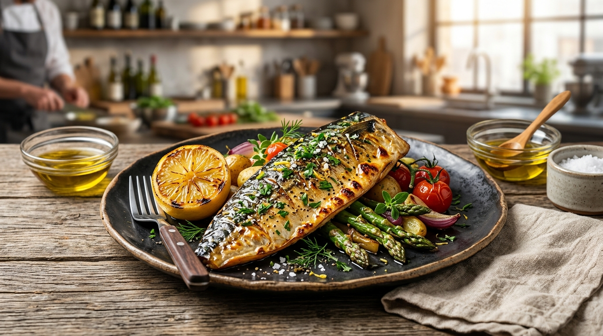

주력 기준 상품노르웨이 고등어
북대서양 제철 어획, 풍부한 유분과 고소한 맛. 구이와 조림 모두에 최적화된 기준 어종.
원산지노르웨이산 (북대서양 FAO 27)
손질 형태[식당] 버터플라이 통마리(두미절단) / [급식] 1인 정량토막·순살
배식 규격식당용 280~380g (통마리) / 급식용 60g, 80g, 100g (정량 컷)
포장 단위5kg, 10kg 벌크 박스 / 개별 진공팩
염지 상태천일염 저염 자반 (약 0.8~1.0%) / 무염(발주 가공)